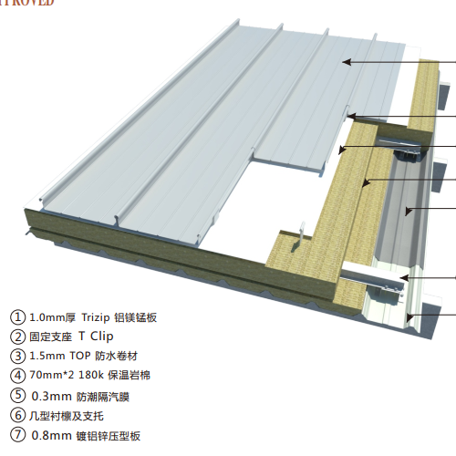
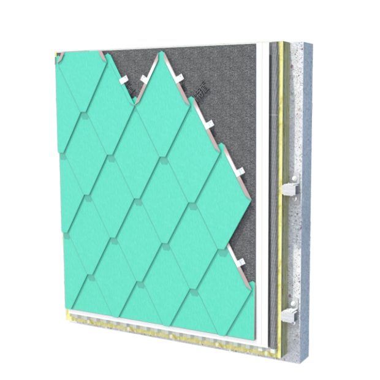
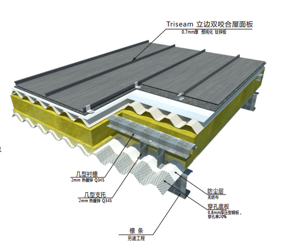

主营产品
TRIZIP直立锁边系统 —— 屋面的艺术
Tri-zip是成熟的直立边缝密合的屋面系统，广泛用于大跨度的钢结构建筑，具有很强的视觉效果和优异的性能。通 过锁边机把相邻的板边连续卷和在一起，安装简便快捷，无需穿孔，板面保持完整，有极佳的防水性能

TRILOK平锁扣系统—— 古典之美
Tri-lok平锁扣系统在建筑上已有数百年的应用历史，这些古老的建筑，虽经岁月的洗礼，依然保持良好的防渗、低维护的性能，散发着迷人的魅力。 与传统的板块不同，系统面板正面有凸边，背面有凹边，形成互锁接口。设计自由灵活，构造复杂的几何造型

TRISRAM立边咬合系统—— 严丝合缝
Triseam立边咬合系统是在欧洲立边节点基础上发展起来的，该系统在19世纪中期就得到应用。标准单元板的立边高度为 25mm,板块之间通过扣件相连,然后使用专业工具缝合.这种缝合可应用于不同建筑造型
